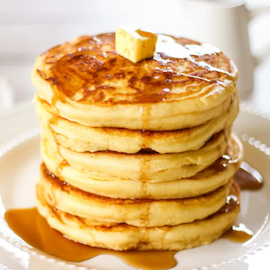
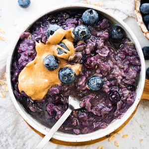
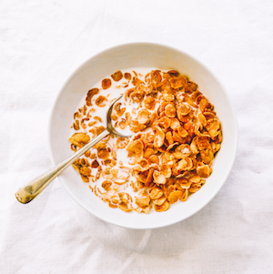
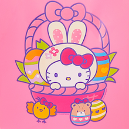
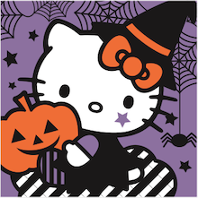

my top 5's
My Top 5 Breakfast Foods
- fluffy pancakes

- blueberry oatmeal

- cereal with milk

- sourdough garlic toast

- avocado smoothies

Top 5 Hello Kittys
-

- the original hello kitty
- 
- hello kitty celebrating easter
- 
- original hello kitty dressed up for halloween
-

- original hello kitty celebrating new years
-

- original hello kitty opening christmas gifts